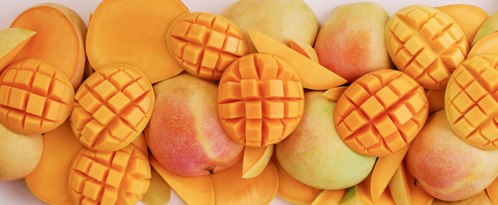

Fresh Fruit!

When you need something guilt free and tasty
There are many different fruits that fit the bill of sweet and satisfying. So why mango? Idk, why cravings? The correct answer is "because" (despite what mom may have told you).
Ingredients
Directions
- Purchase a ripe mango. Squeeze gently to judge ripeness. A ripe mango will give slightly, indicating soft flesh inside. Use your experiencewith produce such as peaches or avocados, which also become softer as they ripen. Ripe mangos will sometimes have a fruity aroma at their stemends.
-
- Keep the skin on and vertically slice off each half away from the pit. Then use a large spoon to scoop out the flesh and transfer it to a bowl to slice or eat.Alternatively, you can scoop out smaller spoonfuls to eat one at a time as a snack.